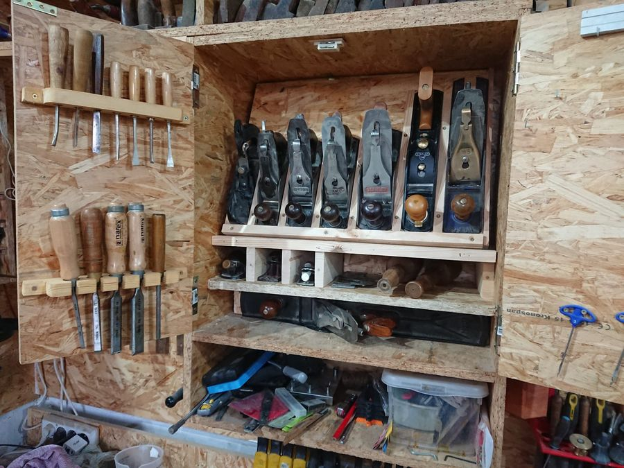
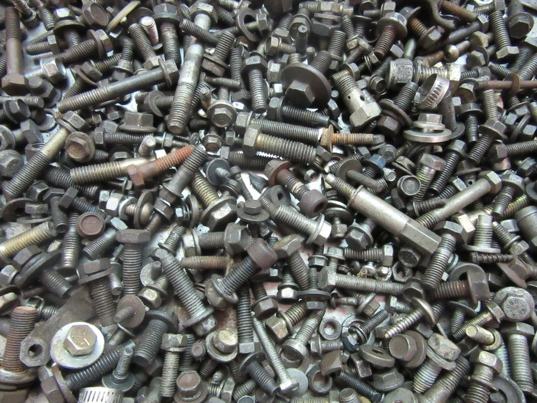

Hakkımızda
Arıcan Yapı Market Nalbur, Sarıyer'in Pınar Mahallesi'nde, Çamlıbel Caddesi No:73'te bir nalbur ve yapı market. Bir vida için de, bir odanın boyası için de, tadilatın çimentosu için de aynı kapıdan girersiniz.
Adımızdaki "arı" bu sitenin petek düzenine ilham verdi: her altıgen bir reyon, hepsi yan yana. Hırdavattan elektriğe, boyadan su tesisatına kadar ev ve yapı işinin malzemesini tek bir yerde sorabilmeniz için.

Temsili görsel
Temsili görselMağaza: neler sorulur?
Google Haritalar'daki işletme kaydımızda yer alan kategoriler, dükkânın neye yetiştiğini en kısa yoldan anlatıyor:
- Nalbur
- Yapı malzemeleri mağazası
- Çimento tedarikçisi
- Boya dükkânı
- Elektrikli ekipman tedarikçisi
- Elektrik malzemeleri satıcısı
- Kilit tedarikçisi
- Boya mağazası
- Su tesisatı malzemeleri satıcısı
Bu kategorilerin karşılığı olan ürünleri Reyonlar sayfasında sekiz başlıkta topladık: hırdavat ve el aletleri, vida-dübel-cıvata, boya ve yapı kimyasalları, çimento ve yapı malzemesi, elektrik, su tesisatı, kilit ve kapı donanımı, bahçe ve temizlik.
Puan
290 Google yorumu
Google Haritalar ortalaması
Bu puan, Google Haritalar'da değerlendirme bırakan kişilerin verdiği puanların ortalaması. Yorumları biz yazmıyoruz; hepsini Google'da kendiniz okuyabilirsiniz.
Alışverişten sonra siz de bir değerlendirme bırakabilirsiniz. Olumlu da olsa eleştiri de olsa, yazdıklarınız mahalleden bir sonraki müşterinin yolunu kolaylaştırır.
Yorumları Google'da okuyunMahalle
Dükkân, Sarıyer ilçesinin Pınar Mahallesi'nde, Çamlıbel Caddesi üzerinde. Mahallede ev tamiri yapan, balkonuyla bahçesiyle uğraşan ya da tadilat yürüten herkes için yakın bir adres.
Haritada "Arıcan Yapı Market Nalbur" adıyla kayıtlıyız. Yol tarifini İletişim sayfasındaki haritadan alabilirsiniz.
Pınar, Çamlıbel Cd. No:73, 34460 Sarıyer/İstanbul Yol tarifi alHaftanın her günü 08:00–21:00
Hafta içi, cumartesi ve pazar aynı saatlerde açığız. Aşağıdaki çizelgede sarı bölüm açık olduğumuz saatleri, mavi çizgi şu anı gösterir.
Her gün 08:00–21:00 arası açığız.
Her gün 08:00–21:00
Dükkâna gelmeden önce
Nalburda en çok vakit alan şey, doğru ölçüyü bulmaktır. Bu dört alışkanlık işinizi kısaltır:
- Eski parçayı getirin
Conta, kartuş, rakor, barel ya da vida: yanınızdaki örnek her tarifin yerini tutar.
- Ölçüyü not edin
Çap, boy, inç ya da kesit; şerit metreyle alınmış bir ölçü yanlış alışverişi önler.
- Fotoğraf çekin
Parçanın takılı olduğu yeri ve üzerindeki yazıyı fotoğraflayın; telefonunuzda dursun.
- Listeyi önceden yollayın
Malzeme listesini WhatsApp'tan gönderin, stok durumunu gelmeden sorun.